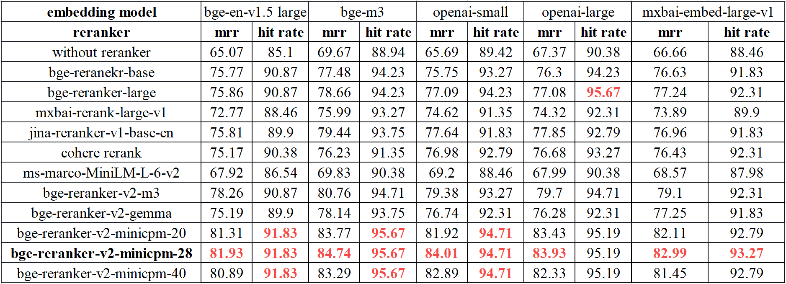
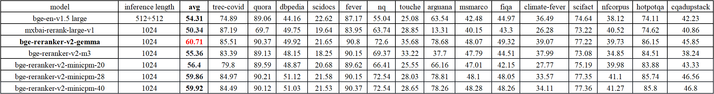

01 Hugging Face
다국어 검색 결과를 다시 거르는 재순위화
apache-2.0 사내 사용 가능공개일 06.24
사내 검색 품질은 첫 검색보다 재정렬 단계에서 크게 갈린다. 임베딩 모델은 문서를 넓게 추린다. 재순위화 모델은 그 후보를 다시 읽고 순서를 고친다. BAAI/bge-reranker-v2-m3는 그 후단 자리에 놓는 모델이다.
무엇을 하는 모델인가
이 모델은 질의와 문서를 함께 넣어 관련도 점수를 낸다. 임베딩 벡터를 따로 만들지 않는다. 검색이 먼저 뽑은 문서 후보를 다시 정렬할 때 쓴다. 다국어 시나리오를 겨냥했다. 라이선스는 Apache-2.0이다.


어떻게 불러 쓰나
from FlagEmbedding import FlagReranker
reranker = FlagReranker('BAAI/bge-reranker-v2-m3', use_fp16=True) # Setting use_fp16 to True speeds up computation with a slight performance degradation
score = reranker.compute_score(['query', 'passage'])
print(score) # -5.65234375
You can map the scores into 0-1 by set "normalize=True", which will apply sigmoid function to the score
score = reranker.compute_score(['query', 'passage'], normalize=True)
print(score) # 0.003497010252573502
scores = reranker.compute_score([['what is panda?', 'hi'], ['what is panda?', 'The giant panda (Ailuropoda melanoleuca), sometimes called a panda bear or simply panda, is a bear species endemic to China.']])
print(scores) # [-8.1875, 5.26171875]
# ... 이어지는 예제는 원문 카드에 있습니다원문: https://huggingface.co/BAAI/bge-reranker-v2-m3
돌리는 데 필요한 것
| 설치 | pip install -U FlagEmbedding |
|---|---|
| 라이브러리 | FlagEmbedding, transformers |
| 파이프라인 | text-classification |
| 파라미터 | 카드·API에 없음 |
| 지원 언어 | multilingual |
라이선스와 사내 반입
- 라이선스
- apache-2.0 사내 사용 가능
- 상업 이용
- 상업 이용에 제약 없음
- 접근 승인
- 필요 없음
- 재배포·파생
- 제한 없음
자동 분류이며 법무 판단을 대신하지 않습니다.
성능과 한계
평가 이름과 재정렬 대상은 카드가 밝혔지만 점수 표는 이 발췌에 없다. 카드에 평가 결과 수치는 밝히지 않았다.
언제 이것을 고르나
다국어 검색을 다루면 BAAI/bge-reranker-v2-m3 쪽이 먼저 검토 대상이다. 영어 감성 분류만 필요하면 ProsusAI/finbert나 cardiffnlp/twitter-roberta-base-sentiment-latest가 맞다. 접근 조건이 느슨한 모델이 필요하면 이 모델과 BAAI/bge-reranker-base가 유리하다. Meta 계열 조건을 피해야 하면 meta-llama/Prompt-Guard-86M 대신 이 모델을 고를 수 있다.
주요 용어
재순위화(Reranker): 검색이 먼저 뽑은 후보 문서를 다시 점수 매겨 순서를 고치는 방식 관련도 점수(Relevance score): 질의와 문서가 얼마나 잘 맞는지 수치로 나타낸 값 시그모이드(Sigmoid): 점수를 0과 1 사이 값으로 바꾸는 함수 파인튜닝(Fine-tuning): 기존 모델을 특정 업무 데이터로 다시 학습하는 작업 BEIR: 검색 재현 성능을 재는 벤치마크 묶음 CMTEB-retrieval: 중국어 중심 검색 성능을 재는 벤치마크
원문 정보
제목: BAAI/bge-reranker-v2-m3
공개일: 2024.06.24